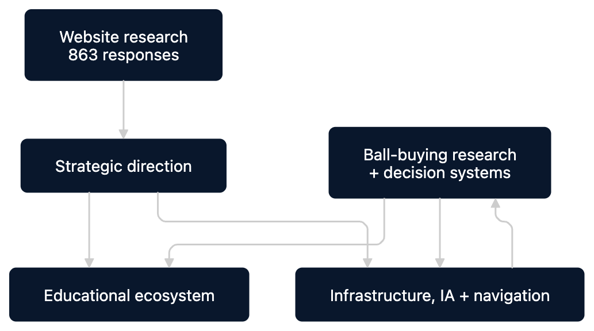

Reimagining a product catalog as a connected bowling platform
Initial research set the direction. Infrastructure and navigation made an expanding ecosystem possible. Later ball-buying research deepened the educational experience and produced new product-guidance and decision systems — each part of the platform continued to inform the others.

Establishing the Direction
863-response website research identified needs across education, product understanding, and community.
Building the Platform Foundation
Infrastructure, information architecture, and navigation evolved to support a growing content and product ecosystem.
Growing the Educational Ecosystem
An ongoing workstream — connected learning pathways translating research and business goals into practical bowling education.
Deepening Product Decision Support
A 3,000-participant study produced clearer motion language, MatchMaker, filtering, comparison, and arsenal systems.